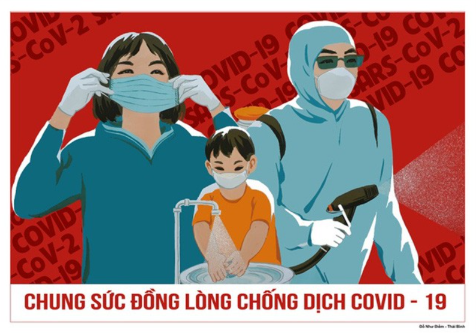
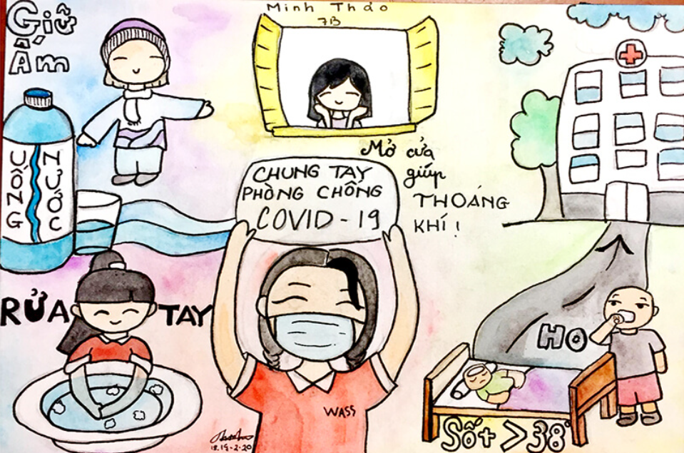
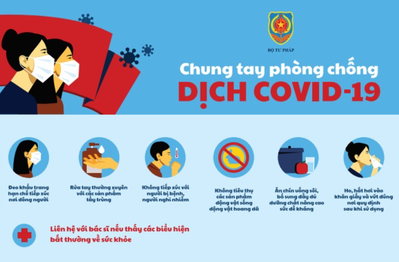
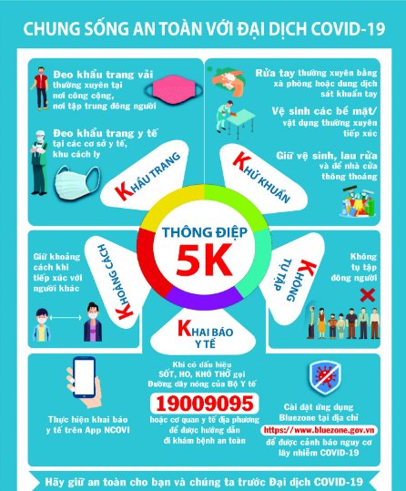
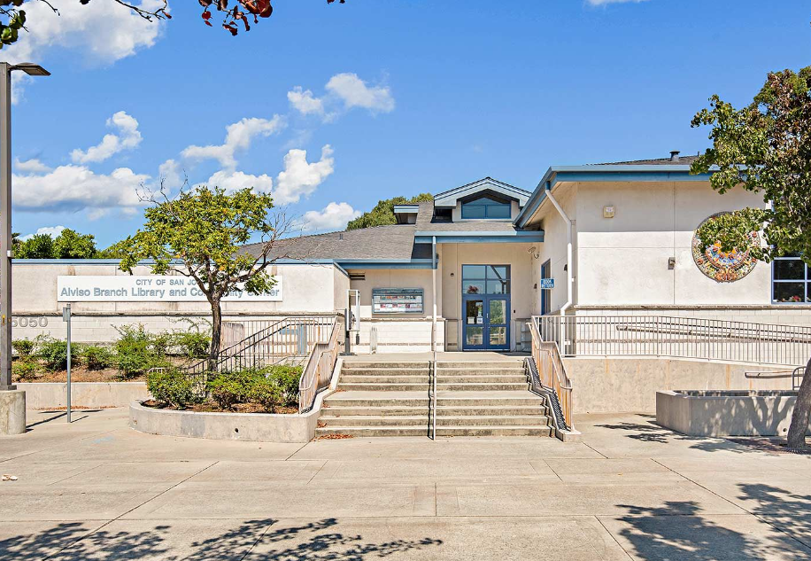

1. Tuyên Truyền Phòng Chống Dịch Bệnh Là Gì?
Tuyên truyền phòng chống dịch bệnh là việc cung cấp thông tin và giáo dục cộng đồng về các biện pháp ngăn ngừa, phát hiện sớm và xử lý dịch bệnh, nhằm bảo vệ sức khỏe cộng đồng.
2. Mục Đích Của Tuyên Truyền
- Nâng cao nhận thức về các bệnh truyền nhiễm.
- Khuyến khích hành động thực hiện các biện pháp phòng ngừa.
- Cung cấp thông tin chính xác và kịp thời về tình hình dịch bệnh.
3. Nội Dung Tuyên Truyền
- Thông tin về dịch bệnh.
- Biện pháp phòng ngừa:
- Rửa tay thường xuyên.
- Đeo khẩu trang.
- Tránh tiếp xúc gần.
- Tiêm phòng vacxin.
- Cách xử lý khi có triệu chứng.
- Chia sẻ thông tin chính thống.
4. Phương Pháp Tuyên Truyền
- Tổ chức hội thảo, seminar.
- Sử dụng phương tiện truyền thông.
- Tạo tài liệu hướng dẫn.
- Đào tạo nhân viên y tế.
5. Tham Gia Của Cộng Đồng
Khuyến khích cộng đồng tham gia vào các hoạt động phòng chống dịch bệnh.